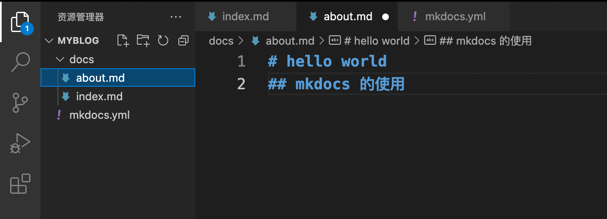
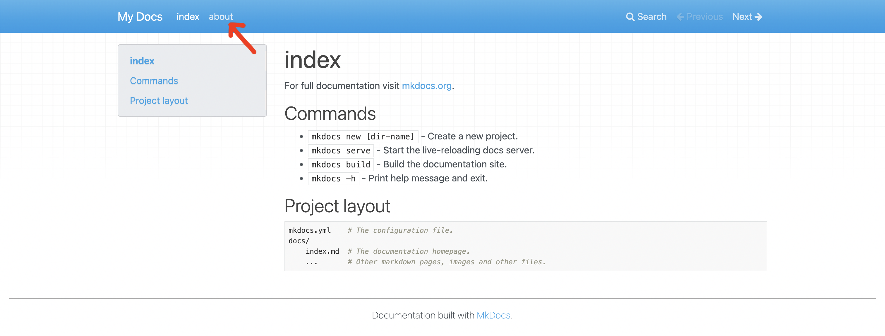

MkDocs 工具使用¶
 Bilibili视频传送门：MkDocs 工具使用
Bilibili视频传送门：MkDocs 工具使用
很多程序员朋友都有写技术博客的习惯，包括你们现在看到的这个网站，也是我将视频的内容都做成了个人网站。这个网站其实就对应了一个 GitHub 仓库，每次提交修改到这个仓库的时候，我的网站也会被自动更新。
那这些是如何实现的呢？主要需要以下三个步骤：
- 使用 MkDocs 工具生成网站
- 使用 GitHub Pages 展示自己的网站
- 使用 GitHub Actions 帮助我们实现工作流自动化
下面我们就具体介绍一下如何使用它们打造属于自己的免费网站。我们首先来介绍一下 MkDocs。
MkDocs 介绍与安装¶
MkDocs 是一个文本工具，我们可以使用 Markdown 写文章，接着再使用 MkDocs 命令，将其转变为 HTML 文件。MkDocs 是一个 Python 包，我们可以使用 pip 来进行安装，安装命令如下：
python -m pip install mkdocs
安装完 MkDocs 后，我们就可以运行 mkdocs 命令：
mkdocs
可以看到相应的提示信息：

使用 MkDocs 创建工程¶
接着，我们用 mkdocs new 命令来创建一个名叫 myblog 的工程:
mkdocs new myblog

这个 myblog 就是我们要放到 GitHub 上的仓库目录，我们用 VS Code 打开这个目录来看看它的结构：

我们可以发现，myblog 目录下只有两样东西，一个是 docs 目录和一个 yaml 文件，docs 目录下存放的就是 Markdown 文件，这里也就是我们网站的内容，yaml 文件是我们工程的配置文件。
使用 Mkdocs 生成网页¶
接下俩，我们使用 mkdocs build 命令，就可以根据 yaml 文件的设置，将 Markdown 文件编译成网页 HTML 文件。 命令和运行结果如下：
mkdocs build

可以看到，命令完成之后，我们就得到了一个 site 文件夹。

打开 site 文件，里面就是生成好的整个网站了，我们点击 index.html，就可以看到网站的效果了。


MkDocs 的配置¶
通过改变 yaml 文件，我们可以改变网站的输出效果。那么 yaml 文件是如何起作用的呢？我们通过一个例子来了解一下。
比如我们在 docs 目录下新增加一个 about.md 的文件，内容如下图所示：

并且在 yaml 文件中做相应的修改：

我们来重新编译一下看看会有什么样的结果：

我们可以发现在网页中果然多了 about 这一栏。
我们接下来简单介绍一些常用的 MkDocs 配置。
1. 增加页面¶
如果我们想要在 mkdocs.yml 文件中配置添加页面，我们可以在并通过添加 nav 设置来实现：
site_name: myproject
nav:
- Home: index.md
- About: about.md
2. 修改配置文件增加多级文档¶
我们也可以设置目录，增加多级文档：
site_name: myproject
nav:
- Home: index.md
- Install: install.md
- Documents:
- Usage: usage.md
- Tutorial: tutorial.md
3. 主题化我们的文档¶
现在，更改配置文件以通过更改主题来更改文档的显示方式。 编辑 mkdocs.yml 文件并添加 theme 设置：
site_name: myproject
nav:
- Home: index.md
- About: about.md
theme: readthedocs
保存更改，你将看到改为使用了ReadTheDocs主题。
扩展资料¶
通过以上介绍，相信你已经对 MkDocs 有了基本的了解，如果大家想要更详细了解 MkDocs，可以阅读 MkDocs 中文文档。